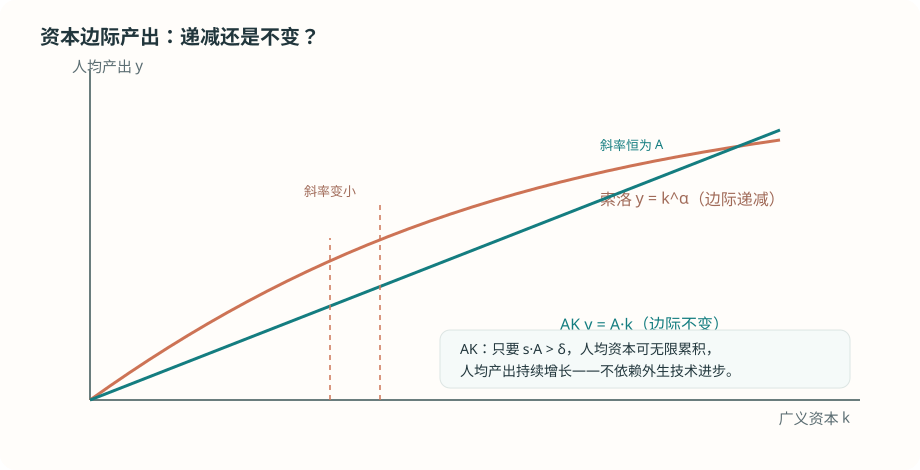
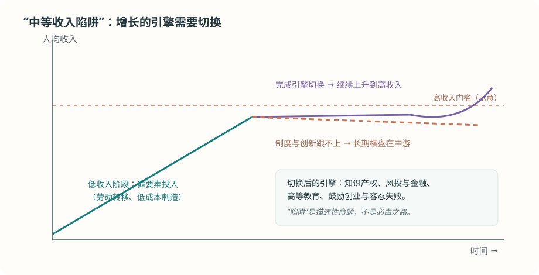

内生增长与制度
索洛模型说长期人均增长来自技术进步，却没有解释技术从哪里来。把知识当作一种特殊商品，用创意生产函数、人力资本与制度，解释为什么有些经济体能够持续增长，有些却长期卡在中等收入。
技术进步为什么不能一直“外生”
上一章的索洛模型给出一个基准结论：人均产出的长期增长只来源于技术进步，而技术进步在该模型里是一个外生变量——它以固定速率 g 增长，模型不解释 g 从何而来。对增长核算来说，这样处理很方便；但对“增长从何而来”这个问题，它把最重要的变量留在了模型之外。
更直白地说，外生技术进步等于假设：在一个封闭模型里，政策与市场的努力都不改变长期增长率。这与许多观察到的现象不符——一些经济体长期保持研发与教育投入，另一些几乎没有。于是罗默（Paul Romer）把技术进步内生化：企业为了利润而投资研发，研发产生新知识，新知识再推动技术进步与增长。
把技术进步内生化，需要回答一个更基础的问题：“知识”作为商品有什么特殊之处，使得它在模型中与机器、土地不同？下一节从知识的技术属性讲起。
知识为什么不是普通商品
罗默内生化技术进步的关键，不是假设“人更聪明了”，而是指出知识（ideas）在技术属性上与普通商品不同。这种不同决定了它能带来报酬递增，而不是像资本那样边际递减。
- 非竞争性（non-rivalry）：一个人使用某个创意，并不妨碍其他人同时使用。一个公式、一段代码、一种生产工艺，可以被无数人同时复用。这与一台机器不同——机器被甲占用时，乙无法同时使用。
- 部分排他性（partial excludability）：知识在技术上非竞争，但可以通过专利、版权、商业秘密等制度部分阻止他人使用。排他性不是自然属性，而是制度赋予的；它决定研发者能否拿回投资。
把这两条放在一起，就出现一个张力：非竞争性让知识容易被复制，从而削弱研发激励；而排他性制度（专利）人为制造“临时垄断”来恢复激励。这是本章后续所有政策讨论的轴心。
AK 模型与创意的生产函数
把知识放进模型，最简洁的一个版本叫 AK 模型：生产函数写成 Y = A·K。这里的 K 是广义资本，包括物质资本、人力资本与知识资本。它最关键的特征是资本边际产出不递减：对 K 求导得 MPK = A，是一个常数。
在不考虑人口与技术增长的简化情形下，若经济把收入的比例 s 用于投资、资本以比率 δ 折旧，则人均资本增长率近似为 g = s·A − δ。这意味着只要 s·A > δ，人均产出就可以无限持续增长，而不需要模型外的技术进步。更重要的是：储蓄率 s 会影响长期增长率本身，而不只是稳态水平——这正是内生增长与索洛的分野。

但 AK 模型把“知识”完全描进了广义资本 K 里，过于简化。罗默（1990）把经济拆成三个部门：最终产品部门（用劳动与中间品生产消费品，竞争性市场）、中间产品部门（用“设计方案”生产中间品，专利使其拥有垄断权）、研发部门（用人力资本与现有知识存量创造新设计方案）。新知识的生产函数写为：
这个方程给出了几个可讨论的政策通道：研发补贴降低研发成本、提高 H_A；专利保护增加创新的垄断利润、提供激励（但过强会阻碍后续创新）；教育投入积累人力资本、提高研发效率；贸易开放扩大市场规模、提高研发回报。它们作用的都是“增长率”，而不只是水平。
演算：AK 长期增长率与索洛稳态的对照
在 AK 模型下，人均产出长期增长率 g = s·A − δ；索洛对照曲线则趋向一个固定稳态。修改任一输入，两条曲线与数字同步更新。所有数值为构造演算，不是任何国家的实测校准。
人力资本：投资还是信号？
人力资本是“凝结在人身上的知识与技能存量”。和物质资本一样，它需要投资才能积累：教育、职业培训、健康保障、以及工作中的“干中学”。和物质资本不同的是，人力资本不能脱离人而存在，也无法被买卖，只能被“租用”（获得工资）。
一个看似简单的问题——“为什么大学毕业生工资更高？”——恰好劈开了两大学派的回答：
| 维度 | 人力资本理论（Becker, 1964） | 信号理论（Spence, 1973） |
|---|---|---|
| 教育的本质 | 提高人的生产技能（创造价值） | 向雇主传递“能力强”的信号（筛选） |
| 高工资的原因 | 生产力真的变高了 | 本来就能力强的人读了大学 |
| 社会含义 | 教育提高整个经济的人力资本存量 | 教育可能部分只是重新排序 |
| 政策启示 | 补贴教育可提高产出 | 单靠扩招未必提高总量效率 |
现实中两种机制同时存在。宏观分析更关心人力资本的总量效应；但即使观察到“教育水平高的国家更富”，也要小心方向与遗漏变量：是教育带来到增长，还是富国更有能力办教育？
这条讨论也把“人力资本”与下一节的“制度”连接起来：即使一个国家投入了大量教育，如果聪明人的最优选择是去寻租（争取垄断特权、政府关系）而不是创办企业与做研发，人力资本也不会自动转化为创新与增长。教育提供“能力”，制度决定“这些能力会被用到哪里”。
制度：增长的“土壤”
内生增长理论解释了“知识为何能带来持续增长”，但它没有回答另一个问题：为什么有些国家积了人力资本、也投入了研发，经济却没有起飞？阿西莫格鲁与罗宾逊（2012）把答案指向制度——尤其是政治与经济制度。
- 包容性制度：保护私有产权、鼓励自由竞争、允许多元参与与权力制衡。它奖励“创造性破坏”，使人力资本与研发投入能转化为增长。
- 掠夺性制度：少数精英把持产权与市场、权力集中且不受制约。它保护既得利益、抑制创造性破坏，使同样的投入难以转化为生产性活动。
制度质量已有可量化的跨国指标。世界银行的全球治理指标（WGI）每年发布六个维度：话语权与问责、政治稳定与安全、政府效率、监管质量、法治、腐败控制。跨国数据上，这些指标与人均 GDP 存在显著正相关。
地理条件、资源禀赋、文化与外部环境也都在起作用。例如同样资源丰富，挪威建立了较完善的制度、委内瑞拉却陷入“资源诅咒”式的困境（这在文献中作为对照案例，而非单一因果结论）。更稳健的说法是：包容性制度是长期增长的必要条件，但不是充分条件。
中等收入陷阱与引擎切换
把内生增长与制度放到一起，就能讨论一个热门命题：中等收入陷阱。这一概念由世界银行在 2007 年前后的东亚研究中提出，描述一种现象：不少经济体从低收入迈入中等收入后，增长动力衰竭，长期徘徊在中等收入水平，无法进入高收入行列。
为什么容易“卡住”？因为增长的引擎需要切换：
- 低收入阶段靠要素投入：劳动力从农业转到工业（结构转型），以低成本优势发展劳动密集型产业，并吸收外部技术。这个阶段制度要求相对低。
- 中等收入阶段要素红利衰减：工资上升、低成本优势消失，产业需要升级到技术密集型。此时要求的制度完全不同——知识产权、高效的金融与风险投资、高质量高等教育、鼓励创业与容忍失败的文化。

把整章连起来看：索洛模型告诉我们长期人均增长来自技术进步，却把技术进步当作外生给定；内生增长理论把技术与知识内生化，指出知识非竞争性带来的报酬递增与研发激励问题；人力资本理论回答“能力从何而来”；制度理论回答“能力用到哪里”。它们共同指向一个结论：长期增长不是靠一次性投入“变富”，而是靠持续创造与吸收新知识的能力。
来源与阅读
本章的模型与概念均给出出处；所有演算数字为构造示例，不是任何国家的官方统计。
- Romer, P. M. (1990). Endogenous Technological Change. Journal of Political Economy
- Romer, P. M. (1986). Increasing Returns and Long-Run Growth. JPE
- Solow, R. M. (1956). A Contribution to the Theory of Economic Growth. QJE
- Spence, M. (1973). Job Market Signaling. QJE（信号理论）
- Acemoglu, Johnson & Robinson (2001). The Colonial Origins of Comparative Development. AER
- World Bank · Worldwide Governance Indicators (WGI)（六个制度维度）
- World Bank (2007). An East Asian Renaissance（中等收入陷阱相关讨论）